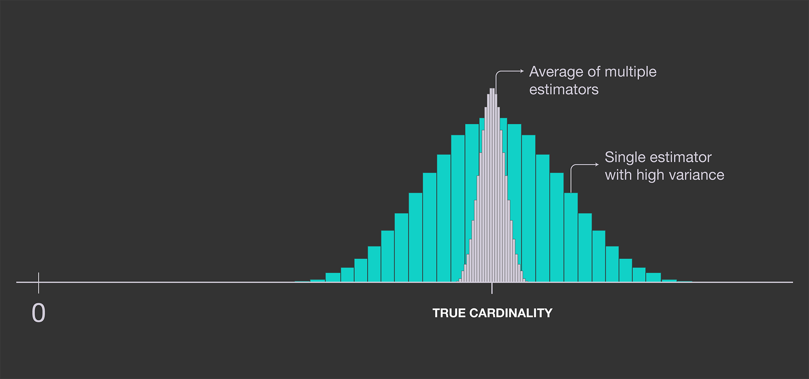

本文代码在我的Github仓库,欢迎给star。
代码实现参考了hyperloglog的维基百科
去重计数(Count distinct)
日常开发中，有时候需要对大量的数据集进行去重计数的工作，这是非常耗费计算资源的。比如说，需要计算某个视频/文章的观看用户数，由于同个用户可能在一天之内多次观看，使用要进行去重操作。如果使用一个hash集合保存用户的id，不仅耗费大量存储空间，也耗费计算的时间。
HyperLogLog适用于数量很大，能容忍少量错误率的去重计数操作，它使用的存储空间非常小，几十字节就能对百万以上的数据进行去重计数。
从简单的计数器说起
假设数字是均匀分布的，那么计数就是1/x_min。为了是数字分布均匀，我们可以使用hash函数产生的hash值来进行估算这堆数字的基数(cardinality)。
这个方法具有很高的偏差，并且依赖于最小的hash值。这个hash值有可能很小，从而干扰计数。
概率性的计数(Probabilistic counting)
为了减少上一个方法的偏差，我们使用hash(x)这个hash值中的0 bit的个数来估算。这是因为，hash(x)以i个0 bit结尾的概率为1/2^i。
平均来说，每2^k个数字，会有一个连续的k个0 bit结尾的数字出现。如果用p(xi)表示hash(x)连续0 bit结尾的个数，数字集合{x1,x2,...,xm}的基数是2^R,这里的R=max(p(x1),p(x2),...,p(xm))
这个方法有2个缺点
- 这里给出的基数都是不连续的，基数
2^R的集合是{1,2,4,8,16,32,...1024,...} - 这个方法还是有比较大的偏差，因为它只记录最大的
p(xi),如果只出现一次，估数就有很大的偏差。
提高精度：LogLog
为例提高精度，我们可以去多个计数器，然后计算他们的平均值。如果使用多个独立的估数器，取它们的平均值，可以降低误差。

我们可以通过使用m个独立的，没有关联的hash函数：{h1(x),h2(x),...,hm(x)},取每个hash函数的最大的连续0bit的个数：R1,R2,...,Rm, 2^R=2^(1/m(R1+R2+...+Rm))
但是，这需要输入x经过m个hash函数的计算，这是比较消耗计算资源的。Durand and Flajolet 提出的方法是, 使用单个的hash函数，让将hash值拆分到不同的bucket。为了将这个hash值拆分成m个不同bucket，取hash值的前k个bit作为索引，并且计算hash值的最后连续为0bit的个数R。
通过m个bucket，我们模拟了使用了m个hansh函数。下面是计数方式
上面的constant是0.79402。对于m个bucket，标准差是1.3/sqrt(m)。对于一个2048个bucket，每个bucket是5 bit大小，错误率是2.8%。5 bit大小的bucket，可以用来估算基数高达2^27的基数，而使用的空间大小仅为2048 * 5 = 1.2 KB。
更多内容，访问我的博客